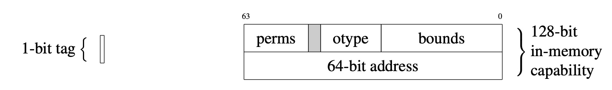

CHERI C/C++ Programming Guide
- Robert N. M. Watson (University of Cambridge, Capabilities Limited),
- Alexander Richardson (University of Cambridge),
- Brooks Davis (SRI International),
- John Baldwin (Ararat River Consulting, LLC),
- David Chisnall (Microsoft Research),
- Jessica Clarke (University of Cambridge),
- Nathaniel Filardo (Microsoft Research),
- Simon W. Moore (University of Cambridge),
- Edward Napierala (University of Cambridge, Capabilities Limited),
- Allison Randal (Capabilities Limited),
- Peter Sewell (University of Cambridge), and
- Peter G. Neumann (SRI International)
This is the CHERI Pure-Capability C/C++ Programming Guide, a short guide to help developers working with pure-capability C/C++ understand the benefits that it brings, any code adaptations they might need to make, and how to interpret new compiler warnings and errors that arise with pure-capability code.
This is a living document; feedback and contributions are welcomed. Please see our GitHub Repository for source code and an issue tracker. There is a rendered version on the web, which is automatically updated when the git repository is committed to.
The 2020 published version of the CHERI C/C++ Programmers Guide can be cited as follows:
Robert N. M. Watson, Alexander Richardson, Brooks Davis, John Baldwin, David Chisnall, Jessica Clarke, Nathaniel Filardo, Simon W. Moore, Edward Napierala, Peter Sewell, and Peter G. Neumann. CHERI C/C++ Programming Guide, Technical Report UCAM-CL-TR-947, Computer Laboratory, June 2020.
Or in BibTex:
@TechReport{UCAM-CL-TR-947,
author = {Watson, Robert N. M. and Richardson, Alexander and Davis,
Brooks and Baldwin, John and Chisnall, David and Clarke,
Jessica and Filardo, Nathaniel and Moore, Simon W. and
Napierala, Edward and Sewell, Peter and Neumann, Peter G.},
title = {{CHERI C/C++ Programming Guide}},
year = 2020,
month = jun,
url = {https://www.cl.cam.ac.uk/techreports/UCAM-CL-TR-947.pdf},
institution = {University of Cambridge, Computer Laboratory},
doi = {10.48456/tr-947},
number = {UCAM-CL-TR-947}
}
Acknowledgments
We gratefully acknowledge the helpful feedback from our colleagues, including Hesham Almatary, Ruben Ayrapetyan, Silviu Baranga, Jacob Bramley, Rod Chapman, Paul Gotch, Al Grant, Brett Gutstein, Alfredo Mazzinghi, Alan Mycroft, and Lee Smith.
This work was supported by the Defense Advanced Research Projects Agency (DARPA), the Air Force Research Laboratory (AFRL), and the Naval Information Warfare Center Pacific (NWIC) under contracts FA8750-10-C-0237 ("CTSRD"), HR0011-18-C-0016 ("ECATS"), FA8750-24-C-B047 ("DEC"), and N66001-25-C-4001 ("SWITCH"). The views, opinions, and/or findings contained in this report are those of the authors and should not be interpreted as representing the official views or policies of the Department of Defense or the U.S. Government. Approved for Public Release, Distribution Unlimited.
This work was supported in part by the Innovate UK project Digital Security by Design (DSbD) Technology Platform Prototype, 105694.
This project has received funding from the European Research Council (ERC) under the European Union’s Horizon 2020 research and innovation programme (grant agreement No 789108), ERC Advanced Grant ELVER.
We also acknowledge the EPSRC REMS Programme Grant (EP/K008528/1), Arm Limited, HP Enterprise, and Google, Inc.
Building
Building the book from the Markdown sources requires
mdBook. Once installed, mdbook build
will build the static HTML files in the book/ directory, whilst mdbook serve will build and serve them at http://localhost:3000. Please refer to
the mdBook documentation for futher options.
Introduction
This document is a brief introduction to the CHERI C/C++ programming languages, which employ CHERI's architectural capability primitive to implement C/C++-language memory safety. We explain the principles underlying these language variants, and their grounding in CHERI's multiple architectural instantiations: CHERI-RISC-V application cores, CHERIoT microcontrollers, and Arm's Morello.
We describe the most commonly encountered differences between these dialects and C/C++ on conventional architectures, and where existing software may require minor changes. We document new compiler warnings and errors that may be experienced compiling code with the CHERI Clang/LLVM compiler, and suggest how they may be addressed through typically minor source-code changes. We explain how modest language extensions allow selected software, such as memory allocators, to further refine permissions and bounds on pointers.
This guidance is based on our experience adapting the FreeBSD operating system kernel and userspace, and applications such as the PostgreSQL database, nginx web server, and Chromium web browser, to run in a CHERI C/C++ capability-based programming environment. It has also benefited from the considerable efforts taken by others to adapt large-scale code bases such as the Linux kernel and OpenJDK.
We conclude by recommending further reading.
Definitions
CHERI Clang/LLVM and LLD implement the following new language, code-generation, and linkage models:
-
CHERI C/C++ are C/C++-language dialects tuned to requirements arising from implementing all pointers using CHERI capabilities. This includes all explicit pointers (i.e., those declared by the programmer) and all implied pointers (e.g., those used to access local and global variables). For example, they diverge from C/C++ implementations on conventional architectures by preventing pointers passed through integer type other than
uintptr_tandintptr_tfrom being dereferenced. New Application Programming Interfaces (APIs) provide access to capability features of pointers, including getting and setting their bounds, required by selected software such as memory allocators. The vast majority of C/C++ source code we have encountered requires little or no modification to be compiled as CHERI C/C++. -
Pure-capability machine code is compiled code (or hand-written assembly) that utilizes CHERI capabilities for all memory accesses — including loads, stores, and instruction fetches — rather than integer addresses. Capabilities are used to implement pointers explicitly described in the source program, and also to implement implied pointers in the C execution environment, such as those used for control flow. Pure-capability machine code is not binary compatible with capability-unaware code using integer pointers, not least due to the different size of the pointer data type.
-
CHERI hybrid C/C++ are further language dialects in which only selected pointers are implemented using capabilities, with the remainder implemented using integers as on conventional architectures. We have primarily used hybrid C in systems software that bridges between environments executing pure-capability machine code and those running largely or entirely non-CHERI-aware machine code. While hybrid machine code has stronger binary compatibility with conventionally generated code, it provides little or no memory protection, and its use is not generally recommended.
The remainder of this document describes the CHERI C/C++ programming languages, as mapped into pure-capability machine code; hybrid C/C++ will not be considered further.
Version history
The first version of this report was published in June 2020. The current web version is a living document being prepared for release as a second edition in late 2025, based on five years of deployed experience with hundreds of CHERI C/C++ developers working on various CHERI platforms including Arm's Morello prototype, Microsoft's CHERIoT, Codasip's X730, the University of Cambridge's CHERI-Toooba, and Capabilities Limited's CVA6-CHERI platforms.
The following broad categories of changes have been made since the 2020 release:
- Conversion to mdbook from LaTeX to enable a live web version.
- Update cited articles and technical reports.
- Better define, and discourage use of, CHERI Hybrid C/C++.
- Include information on using CHERI C/C++ on a more diverse range of platforms, including Morello and CHERIoT, as well as work on arising CHERI-adapted OSes such as CHERI Linux and seL4.
- Include information on printing capability values via
strfcap(3)andprintf(3). - Numerous minor editorial and formatting improvements.
Background
CHERI extends conventional processor Instruction-Set Architectures (ISAs) with support for architectural capabilities. One important use for this new hardware data type is in the implementation of safer C/C++ pointers and the code or data they point at.
Our 2019 technical report, An Introduction to CHERI, provides a more detailed overview of the CHERI architecture, ISA modeling, hardware implementations, and software stack1. Our more recent 2025 article in IEEE Security and Privacy, CHERI: Hardware-Enabled C/C++ Memory Protection at Scale, reviews recent research and results2.
Robert N. M. Watson, Simon W. Moore, Peter Sewell, and Peter G. Neumann. An Introduction to CHERI, Technical Report UCAM-CL-TR-941, Computer Laboratory, September 2019.
Robert N.M. Watson, David Chisnall, Jessica Clarke, Brooks Davis, Nathaniel Wesley Filardo, Ben Laurie, Simon W. Moore, Peter G. Neumann, Alexander Richardson, Peter Sewell, Konrad Witaszczyk, and Jonathan Woodruff. CHERI: Hardware-Enabled C/C++ Memory Protection at Scale, IEEE Security & Privacy, vol. 22, no. 04, pp. 50-61, July-August 2024.
CHERI capabilities
CHERI capabilities are twice the width of the native integer pointer type of the baseline architecture: there are 128-bit capabilities on 64-bit platforms, and 64-bit capabilities on 32-bit platforms. Each capability consists of an integer (virtual) address of the natural size for the architecture (e.g., 32 or 64 bit), and also additional metadata that is compressed in order to fit in the remaining 32 or 64 bits of the capability (see Figure 1 for an example; details vary across underlying architectures and word sizes). In addition, capabilities are associated with a 1-bit validity "tag" whose value is maintained in registers and memory by the architecture, but is not part of addressable memory.
 Figure 1: 128-bit CHERI Concentrate capability representation used in 64-bit CHERI-RISC-V as described in CHERI ISAv9: 64-bit address and metadata in addressable memory; and 1-bit out-of-band tag.
Each element of the additional metadata and tag of the capability contributes to the protection model:
-
Validity tag: The tag tracks the validity of a capability. If invalid, the capability cannot be used for load, store, instruction fetch, or other operations. It is still possible to extract fields from an invalid capability, including its address.
-
Bounds: The lower and upper bounds are addresses restricting the portion of the address space within which the capability can be used for load, store, and instruction fetch. Setting a capability's address (i.e., where it points) within bounds will retain the capability's validity tag. Setting addresses out of bounds is subject to the precision limits of the bounds compression model (see below and Out-of-bounds pointers). Broadly speaking, setting addresses "nearly within" the capability's bounds will be "representable" in the model, and will preserve the validity tag. Out-of-bounds capabilities continue to authorize access only to memory within bounds.
-
Permissions: The permissions mask controls how the capability can be used — for example, by authorizing the loading and storing of data and/or capabilities.
-
Object type: If this value is not equal to the unsealed object type, the capability is "sealed" and cannot be modified or dereferenced, but can be used to implement opaque pointer types. This feature is not described further in this document, as it is primarily used to implement software compartmentalization rather than object-level memory protection.
Bounds precision
When stored in memory, valid capabilities must be naturally aligned — i.e., at 64-bit or 128-bit boundaries, depending on capability size — as that is the granularity at which in-memory tags are maintained. Partial or complete overwrites with data, rather than a complete overwrite with a valid capability, lead to the in-memory tag being cleared, preventing corrupted capabilities from later being dereferenced.
In order to reduce the memory footprint of capabilities, capability compression is used to reduce the overhead of bounds so that the full capability, including address, permissions, and bounds fits within 64 or 128 bits (plus the 1-bit out-of-band tag). Bounds compression takes advantage of redundancy between the address and the bounds, which occurs because a pointer typically falls within (or close to) its associated allocation, and because allocations are typically well aligned. The compression scheme uses a floating-point representation, allowing high-precision bounds for small objects, but requiring stronger alignment and padding for larger allocations (see Bounds alignment due to compression). As a result, allocators handling large objects may define "spatial safety" as providing non-aliasing rather than the guarantee of a trap, as allocation bounds may not exactly align to architectural capability bounds.
Architectural rules for capability use
The architecture enforces several important security properties on changes to this metadata:
-
Provenance validity ensures that capabilities can be used — for load, store, instruction fetch, etc. — only if they are derived via valid transformations of valid capabilities. This property holds for capabilities in both registers and memory.
-
Monotonicity requires that any capability derived from another cannot exceed the permissions and bounds of the capability from which it was derived (leaving aside sealed capabilities, used for domain transition, whose mechanism is not detailed in this report).
Root capabilities and capability derivation
At boot time, the architecture provides initial capabilities to the firmware, allowing data access and instruction fetch across the full address space. Additionally, all tags are cleared in memory. Further capabilities can then be derived (in accordance with the monotonicity property) as they are passed from firmware to boot loader, from boot loader to hypervisor, from hypervisor to the OS, and from the OS to the application. At each stage in the derivation chain, bounds and permissions may be restricted to further limit access. For example, the OS may assign capabilities for only a limited portion of the address space to the user software, preventing use of other portions of the address space.
Intentionality
Similarly, capabilities carry with them intentionality: when a process passes a capability as an argument to a system call, the OS kernel can carefully use only that capability to ensure that it does not access other process memory that was not intended by the user process — even though the kernel may in fact have permission to access the entire address space through other capabilities it holds. This is important, as it prevents "confused deputy" problems, in which a more privileged party uses an excess of privilege when acting on behalf of a less privileged party, performing operations that were not intended to be authorized. For example, this prevents the kernel from overflowing the bounds on a userspace buffer when a pointer to the buffer is passed as a system-call argument.
Capability atomicity
The hardware furthermore guarantees that capability tags and capability data is written atomically. For example, if one thread stores a valid capability and another writes arbitrary data to the same location, it is impossible to observe the arbitrary data with the validity bit set.
Formally verified groundings for memory safety
These architectural properties provide the foundation on which a capability-based OS, compiler, and runtime can implement C/C++-language memory safety. They have been made precise and have been proved, with machine-checked proof, to hold for the CHERI-MIPS architecture.1
Kyndylan Nienhuis, Alexandre Joannou, Thomas Bauereiss, Anthony Fox, Michael Roe, Brian Campbell, Matthew Naylor, Robert M. Norton, Simon W. Moore, Peter G. Neumann, Ian Stark, Robert N. M. Watson, and Peter Sewell. Rigorous engineering for hardware security: Formal modelling and proof in the CHERI design and implementation process. In Proceedings of the 41st IEEE Symposium on Security and Privacy (Oakland 2020). San Jose, CA, USA, May 18-20, 2020.
CHERI C/C++
The architectural-capability type can be used in a variety of ways by software. One particularly useful use case is in implementing CHERI C/C++. In this model, all C/C++ language-visible pointer types, as well as any implied pointers implementing vtables, return addresses, function pointers, global variables, arrays of variadic-function arguments, and so on, are implemented using capabilities with tight bounds. This allows the architecture to imbue pointers with protection by virtue of architectural provenance validity, bounds checking, and permission checking, protecting pointers from corruption and providing strong spatial memory safety. In some execution environments, such as in CHERIoT and CheriBSD's CheriABI process environment, capabilities are combined with efficient architectural revocation features to enable strong heap temporal safety.
The CHERI C/C++ run-time environment
CHERI C code executes within a capability-aware run-time environment — whether "bare metal" with a suitable runtime, or in a richer, OS-based process environment such as CheriABI (see CheriABI) or CHERIoT RTOS, which ensures that:
- capabilities are context switched (if required);
- tags are maintained by the OS virtual-memory subsystem (if present);
- capabilities are supported in OS control operations such as debugging (as needed);
- system-call arguments, the run-time linker, and other aspects of the OS Application Binary Interface (ABI) utilize capabilities rather than integer pointers;
- the C/C++-language runtime implements suitable capability preservation
(e.g., in
memcpy) and restriction (e.g., inmalloc); and - temporal safety is enforced by heap allocators (if supported).
CHERI is supported by a growing set of operating systems:
- CheriBSD, the CHERI-extended version of the open-source FreeBSD operating system, CheriABI operates as a complete additional OS ABI. CheriABI is implemented in the style of a 32-bit or 64-bit OS personality, in that it requires its own set of suitably compiled system libraries and classes. Userlevel runs with referential, spatial, and temporal safety. At the time of writing, the kernel supports referential and spatial safety, but not temporal safety.
- CHERI Linux also implements a pure-capability kernel and process environment modeled on CheriABI that support referential and spatial safety.
- A number of bare-metal runtimes, such as newlib, and embedded operating systems, such as FreeRTOS (CheriFreeRTOS) and RTEMS (CHERI-RTEMS), have been adapted to support referential and spatial memory protection using CHERI.
- seL4 has been updated (out of tree) to support referential and spatial memory protction using CHERI.
- CHERIoT RTOS implements referential, spaital, and temporal memory protection using CHERI.
Outside of the OS and language runtime themselves, CHERI C/C++ require relatively few source-code-level changes to C/C++-language software. Exceptions to this rule of thumb typically take the form of compiler toolchain, low-level C/C++ runtimes such as run-time linkers, and high-level language runtimes that may (for example) include just-in-time compilers.
We explore the changes required to software in the remainder of this document.
Referential, spatial, and temporal safety
Pure-capability C/C++ introduces a number of new types of protection not present in compilation to conventional architectures:
-
Referential safety protects pointers (references) themselves. This includes integrity (corrupted pointers cannot be dereferenced) and provenance validity (only pointers derived from valid pointers via valid manipulations can be dereferenced).
When pointers are implemented using architectural capabilities, CHERI's capability tags and provenance validity naturally provide this protection.
-
Spatial safety ensures that pointers may be used only to access memory within bounds of their associated allocation; dually, manipulating an out-of-bounds pointer will not grant access to another allocation.
This is accomplished by adapting various memory allocators, including the run-time linker for global variables, the stack allocator, and the heap allocator, to set the bounds on the capability implementing a pointer before returning it to the caller. Due to precision constraints on capability bounds, bounds on returned pointers may include additional padding, but will still not permit access to any other allocations (see Bounds alignment due to compression). Monotonicity ensures that callers cannot later broaden the bounds to cover other allocations.
Referential safety and spatial safety are implemented in CheriBSD's and CHERI Linux's kernels and pure-capability CheriABI execution environments, in CHERIoT RTOS, CHERI-adapted seL4, and a number of CHERI-adapted embedded operating systems including FreeRTOS and RTEMS.
-
Temporal safety prevents a pointer retained after the release of its underlying allocation from being used to access its memory if that memory has been reused for a fresh allocation (e.g., after a fresh pointer to that memory has been returned by a further call to
mallocafter the current pointer passed tofree).Heap temporal safety is accomplished by preventing new pointers being returned to a previously allocated region of memory while any prior pointers to that memory persist in application-accessible memory. Memory will be held in quarantine until any prior pointers have been revoked; then the memory may be reallocated.
Architectural capability tags and revocation features allow intermittent revocation sweeps to accurately and efficiently locate and overwrite any capabilities implementing stale pointers. On application cores, architectural support includes MMU features to allow the tracking of "capability versions" of pages (a la loadside garbage-collection techniques), and on microcontroller cores, direct revocation bits may be stored directly in SRAM. Spatial safety ensures that pointers cannot be used to reference other memory, including other freed memory.
Temporal heap safety is implemented in CheriBSD's pure-capability CheriABI execution environment running on Arm Morello and CHERI-RISC-V application cores, and in CHERIoT RTOS running on CHERIoT microcontroller cores.
Impact on the C/C++ programming model
Several kinds of changes may be required by programmers; the extent to which these changes impact a particular library or application will depend significantly on its idiomatic use of C. Our experience suggests that low-level system components such as run-time linkers, debuggers, memory allocators, and language runtimes require a modest but non-trivial porting effort. Similarly, support classes that include, for example, custom synchronization features, may also require moderate adaptation. Other applications may compile with few or no changes — especially if they are already portable across 32-bit and 64-bit platforms and are written in a contemporary C or C++ dialect. In the following sections, we consider various kinds of programmer-visible changes required in the CHERI C/C++ programming environment. In many cases, compiler warnings and errors can be used to identify potential issues compiling code as CHERI C/C++ (see CHERI compiler warnings and errors).
Capability-related faults
When architectural capability properties are violated, such as by an attempt to dereference an invalid capability, access memory outside the bounds of a capability, or perform accesses not authorized by the permissions on a capability, this typically leads to a hardware exception (trap). Operating-system kernels are able to catch this exception via a trap handler, optionally delivering it to the run-time environment via OS-specific mechanisms.
However, the language-level behavior of CHERI C/C++ is considerably more subtle: existing undefined behavior semantics in C are retained. The compiler is free to assume that loads and stores will not trap (i.e., that any program is free of undefined behavior), and may optimize under this assumption, including reordering code. Architectural traps occur when dynamic loads and stores are attempted, and reordering could lead to potential confusing behavior for programmers.
In the CheriABI process environment, the operating system catches the hardware
exception and delivers a SIGPROT signal to the user process;
further information may be found in CheriABI.
In other environments, such as bare metal or under an embedded OS, behavior is
specific to those environments, as it will depend both on how architectural
exceptions are handled, and how those events are delivered to the C-language
stack.
Fail stop may be appropriate behavior in some environments, and is in fact the
default behavior in CheriABI when SIGPROT is not handled.
Pointer provenance validity
CHERI C/C++ implement pointers using architectural
capabilities, rather than using conventional 32-bit or 64-bit integers.
This allows the provenance validity of language-level pointers to be
protected by the provenance properties of CHERI architectural capabilities:
only pointers implemented using valid capabilities can be dereferenced.
Other types that contain pointers, uintptr_t and intptr_t,
are similarly implemented
using architectural capabilities, so that casts through these types
can retain capability properties.
When a dereference is attempted on a capability without a valid tag —
including load, store, and instruction fetch — a hardware exception fires
(see Capability-related faults).
On the whole, the effects of pointer provenance validity are non-disruptive to C/C++ source code. However, a number of cases exist in language runtimes and other (typically less portable) C code that conflate integers and pointers that can disrupt provenance validity. In general, generated code will propagate provenance validity in only two situations:
-
Pointer types The compiler will generate suitable code to propagate the provenance validity of pointers by using capability load and store instructions. This occurs when using a pointer type (e.g.,
void *) or an integer type defined as being able to hold a pointer (e.g.,intptr_t). As with attempting to store 64-bit pointers in 32-bit integers on 64-bit architectures, passing a pointer through an inappropriate type will lead to truncation of metadata (e.g., the validity tag and bounds). It is therefore important that a suitable type be used to hold pointers.This pattern often occurs where an opaque field exists in a data structure — e.g., a
long_targument to a callback in older C code — that needs to be changed to use a capability-oblivious type such asintptr_t.
-
Capability-oblivious code In some portions of the C/C++ runtime and compiler-generated code, it may not be possible to know whether memory is intended to contain a pointer or not — and yet preserving pointers is desirable. In those cases, memory accesses must be performed in a way that preserves pointer provenance. In the C runtime itself, this includes
memcpy, which must use capability load and store instructions to transparently propagate capability metadata and tags.A useful example of potentially surprising code requiring modification for CHERI C/C++ is
qsort. Some C programs assume thatqsorton an array of data structures containing pointers will preserve the usability of those pointers. As a result,qsortmust be modified to perform memory copies using pointer-based types, such asintptr_t, when size and alignment require it.
Recommended use of C-language types
As confusion frequently arises about the most appropriate types to use for integers, pointers, and pointer-related values, we make the following recommendations:
-
int_t,int32_t,long_t,int64_t, ...: These pure integer types should be used to hold integer values that will never be cast to a pointer type without first combining them with another pointer value — e.g., by using them as an array offset. Most integers in a C/C++-language program will be of these types. -
ptraddr_t: This is a new integer type introduced by CHERI C and should be used to hold addresses.ptraddr_tshould not be directly cast to a pointer type for dereference; instead, it must be combined with an existing valid capability to the address space to generate a dereferenceable pointer. Typically, this is done using thecheri_address_set(c, x)function. -
size_t,ssize_t: These integer types should be used to hold the unsigned or signed lengths of regions of address space.
-
ptrdiff_t: This integer type describes the difference of indices between two pointers to elements of the same array, and should not be used for any other purpose. It can be added to a pointer to obtain a new pointer, but the result will be dereferenceable only if the address lies within the bounds of the pointer from which it was derived.Less standards-compliant code sometimes uses
ptrdiff_twhen the programmer more likely meantintptr_tor (less commonly)size_t. When porting code, it is worthwhile to audit use ofptrdiff_t. -
intptr_t,uintptr_t: These integer types should be used to hold values that may be valid pointers if cast back to a pointer type. When anintptr_tis assigned an integer value — e.g., due to constant initialization to an integer in the source — and the result is cast to a pointer type, the pointer will be invalid and hence non-dereferenceable. These types will be used in two cases: (1) Where there is uncertainty as to whether the value to be held will be an integer or a pointer — e.g., for an opaque argument to a callback function; or (2) Where it is more convenient to place a pointer value in an integer type for the purposes of arithmetic (which takes place on the capability's address and in units of bytes, as if the pointer had been cast tochar *).The observable, integer range of a
uintptr_tis the same as that of aptraddr_t(orptrdiff_tforintptr_t), despite the increased alignment and storage requirements. -
intmax_t,uintmax_t: According to the C standard, these integer types should be capable of representing any value of any (unsigned) integer type. In CHERI C/C++, they are not provenance-carrying and can represent the integer range ofuintptr_t/intptr_t, but not the capability metadata or tag bit. As the observable value ofintptr_t/intptr_tis the pointer address range, we believe this choice to be compatible with the C standard.Additionally, due to ABI constraints, it would be extremely difficult to change the width of these types from 64 to 129 bits. This is also true for other architectures such as x86: despite Clang and GCC supporting an
__int128type,intmax_tremains 64 bits wide.We generally do not recommend use of these types in CHERI C/C++. However, the types may be useful in
printfcalls (using the%jformat string width modifier) as theinttypes.hPRI*macros can be rather verbose. -
maxalign_t: This type is defined in C as an object type whose alignment is the greatest fundamental alignment and this includes capability types for CHERI C/C++. We found that some custom allocators usesizeof(long double)orsizeof(uint64_t)to align their return values. While this appears to work on most architectures, in CHERI C/C++ this must be changed toalignof(maxalign_t).1 -
char *, ...: These pointer types are suitable for dereference, but in general should not be cast to or from arbitrary integer values. Valid pointers are always derived from other valid pointers (including those cast tointptr_toruintptr_t), and cannot be constructed using arbitrary integer arithmetic.
It is important to note that uintptr_t is no longer the same size as
size_t. This difference may require making some changes to
existing code to use the correct type depending on whether the variable
needs to be able store a pointer type. In cases where this is not obvious
(such as for a callback argument), we recommend the use of uintptr_t.
This ensures that provenance is maintained.
It is important to use alignof instead of sizeof since many
common implementations, such as GCC and FreeBSD, define maxalign_t as a
struct and not a union.
Capability alignment in memory
Because tags apply only to memory locations that are capability-aligned
and capability-sized,
unaligned storage of pointers will either generate a run-time
hardware exception (if a capability-aware load or store is performed), or discard the
tag (if a capability-oblivious memory copy is performed — e.g., using
memcpy to copy from an aligned location to an unaligned one).
One example of this is Berkeley DB (BDB) when used as an in-memory
implementation rather than as an on-disk database format.
Even when patched to use memcpy to copy objects stored as data, it
does not ensure sufficient alignment in its internal storage to preserve tags.
We therefore recommend against using BDB for this purpose.
While unaligned pointer use is uncommon in C programs, as data-structure
layouts are normally designed to keep them strongly aligned for performance
and atomicity reasons, any code depending on unaligned pointers will need
to be changed.
Single-origin provenance
In the CHERI memory protection model, capabilities are derived from a single other
capability.
However, in C code, expressions may construct a new intptr_t value from more
than one provenance-carrying parent intptr_t — for example, by casting both a
pointer and a literal value to intptr_t-s, and then adding them.
In that case, the compiler must decide which input capability provides the
capability metadata (bounds, permissions, ...) to be used in the output
value.
Consider for example the following code:
void *c1 = (void *)((uintptr_t)input_ptr + 1);
void *c2 = (void *)(1 + (uintptr_t)input_ptr);
uintptr_t offset = 1;
void *c3 = (void *)(offset + (uintptr_t)input_ptr);
In C with integer pointers, the values of c1, c2, and c3 might be expected to have the
same value as input_ptr, except with the address incremented by one.
In CHERI C, each expression includes an arithmetic operation between provenance-carrying types.
While not visible in the source code, the constant 1 is promoted to a capability type, uintptr_t.
In the current implementation, the compiler will return the expected provenance-carrying result for cases c1 and c2 but not c3.1
For c1 and c2, the compiler sees that one of the sides is a non-provenance-carrying integer type that was promoted to uintptr_t and therefore selects the other operand as the provenance source.
It is not feasible to infer the correct provenance source for the third case, so the compiler will emit a warning.2
The current behavior for such ambiguous cases is to select the left-hand-side as the provenance source, but we are considering making this an error in the future.
The recommended approach to resolve such ambiguous cases is to change the type of one operand to a non-provenance-carrying type such as size_t.
Alternatively, if the variable declaration cannot be changed, it is also possible to use a cast in the expression itself.
size_t offset_size_t = 1;
void *c3_good1 = (void *)(offset_size_t + (uintptr_t)input_ptr);
uintptr_t offset_uintptr_t = 1;
void *c3_good2 = (void *)((size_t)offset_uintptr_t + (uintptr_t)input_ptr);
We also provide a new attribute cheri_no_provenance that can be used to annotate variables or fields of type intptr_t/uintptr_t where the underlying type cannot be changed:
struct S {
uintptr_t maybe_tagged;
uintptr_t never_tagged __attribute__((cheri_no_provenance));
}
void test(struct S s, uintptr_t ptr) {
void *x1 = (void *)(s.maybe_tagged + ptr); // ambiguous, currently uses LHS
void *x2 = (void *)(s.never_tagged + ptr); // not ambiguous, uses RHS
}
Historically, the CHERI compiler would select the left-hand-most pointer in the expression as the provenance source.
While this model follows a single consistent rule, it can lead to surprising behavior if an expression places the provenance-carrying value to the right-hand-side.
In the example above, the value of c1 would be a valid capability, but c2 and c3 would hold an untagged value (albeit with the expected address).
We could add a data-flow-sensitive analysis to determine whether values are the result of promotion from a non-provenance-carrying type. However, this would add significant complexity to the compiler and we have not seen many cases where this would have avoided changes to the source code.
Bounds
CHERI C/C++ pointers are implemented using capabilities that enforce lower and upper bounds on access. In the pure-capability run-time environment, those bounds are normally set to the range of the memory allocation into which the pointer is intended to point. Because of capability compression, increased alignment requirements may apply to larger allocations (see Bounds alignment due to compression).
Bounds may be set on pointers returned by multiple system components including the OS kernel, the run-time linker, compiler-generated code, system libraries, and other utility functions. As with violations of provenance validity, out-of-bounds accesses — including load, store, and instruction fetch — trigger a hardware exception (see Capability-related faults).
Bounds from the compiler and linker
The compiler will arrange that language-level pointers to stack allocations have suitable
bounds, and that the run-time linker will return bounded pointers to global
variables.
Bounds will typically be set based on an explicitly requested allocation size
(e.g., via the size passed to alloca or, for compiler-generated
code or linker-allocated memory, by the C type mechanism (e.g.,
sizeof(foo)), adjusted for precision requirements arising from
capability compression.
In some cases, such as with global variables allocated in multiple object
files, the actual size of the allocation may not be resolved until run time,
by the run-time linker.
These bounds will typically not cause observable changes in behavior — other than hardware exceptions when (accidentally) performing an out-of-bounds access.
Bounds from the heap allocator
malloc will set bounds on pointers to new heap allocations.
In typical C use, this is not a problem, as programmers expect to access
addresses only within an allocation.
However, in some uses of C, there may be an expectation that memory access can
occur outside the allocation bounds of the pointer via which memory access
takes place.
For example, if an integer pointer difference D is taken between
pointers to two different allocations (B and A), and later
added to pointer A, the new pointer will have an address
within B, but permit access only to A.
This idiom is mostly likely to be found with non-trivial uses of realloc (e.g., cases where multiple pointers into a buffer allocated or reallocated by realloc need to be updated).
We note that the subtraction of two pointers from different
allocations is undefined behavior in ISO C, and risks mis-optimization from
breaking compiler alias analysis assumptions.
Further, any operation on the pointer passed to realloc is undefined upon
return. Instead, we suggest that the programmer measure a pointer P's
offset into an object A prior to realloc and derive new pointers
from the realloc result B and these offsets. (i.e., compute
B + (P - A) rather than
P + (B - A)).1
While it may seem that A remains available after realloc, our
revocation sweeps which enforce temporal safety may have atomically replaced
this with a non-pointer value. The scalar value
D = P - A will naturally be preserved by revocation.
Subobject bounds
CHERI C/C++ also supports automatically restricting the
bounds when a pointer is taken to a subobject — for example, an array
embedded within another structure that itself has been heap allocated.
This will prevent an overflow on that array from affecting the remainder of
the structure, improving spatial safety.
Subobject bounds are not enabled by default as they may require additional source code changes
for compatibility, but can be enabled using the -Xclang -cheri-bounds=subobject-safe compiler flag.
One example of C code that requires changes for subobject bounds is the containerof
pattern, in which pointer arithmetic on a pointer to a subobject is used to
recover a pointer to the container object — for example, as seen in the
widely used BSD queue.h linked-list macros or the generic C
hash-table implementation, uthash.h.
In these cases, an opt-out annotation can be applied to a given type, field or variable that instructs the compiler to not tighten bounds when creating pointers to subobjects. We currently define three opt-out annotations that can be used to allow existing code to disable use of subobject bounds:
Completely disable subobject bounds: It is possible to annotate a typedef, record member, or variable declaration with:
__attribute__((cheri_no_subobject_bounds))
to indicate that the compiler should not tighten bounds when taking the address or a C++ reference. In C++11/C20 mode this can also be spelled as [[cheri::no_subobject_bounds]].
struct str {
/*
* Nul-terminated string array -- pointers taken to this subobject will
* use the array's bounds, not those of the container structure.
*/
char str_array[128];
/*
* Linked-list entry element -- because of the additional attribute,
* pointers taken to this subobject will use the container structure's
* bounds, not those of the specific field.
*/
struct list_entry str_le __attribute__((cheri_no_subobject_bounds));
} str_instance;
void
fn(void)
{
/* Struct pointer gets bounds of str_instance. */
struct str *strp = &str_instance;
/* Character pointer gets bounds of the subobject, not str_instance. */
char *c = str_instance.str_array;
/* Struct pointer gets bounds of str_instance, not the subobject. */
struct list_entry *lep = &str_instance.str_le;
}
Disable subobject bounds in specific expressions: It is also possible to opt out of bounds-tightening on a per-expression granularity by casting to an annotated type:
char *foo(struct str *strp) {
return (&((__attribute__((cheri_no_subobject_bounds))struct str *)
strp)->str_array);
}
Use remaining allocation size: In certain cases, the size of the subobject is not known, but we still know that data before the field member will not be accessed (e.g., variable size array members inside structs). Pre-C99 code will declare such members as fixed-size arrays, which will cause a hardware exception if the allocation does not grant access to that many bytes. 1 To use the remaining allocation size instead of completely disabling bounds (and thus protecting against buffer underflows) the annotation:
__attribute__((cheri_subobject_bounds_use_remaining_size))
can be used. When targeting C++11/C20:
[[cheri::subobject_bounds_use_remaining_size]]
is also supported.
Examples of this pattern include FreeBSD's struct dirent, which uses
char d_name[255] for an array that is actually of variable size, with
the containing allocation (e.g., of the heap) being sized to allow additional
space for array entries regardless of size in the type definition.
For example:
struct message {
int m_type;
/*
* Variable-length character array -- because of the additional
* attribute, pointers taken to this subobject will have a lower bound
* at the first address of the array, but retain an upper bound of the
* allocation containing the array, rather than 252 bytes higher.
*/
char m_data[252]
__attribute__((cheri_subobject_bounds_use_remaining_size));
};
The use of subobject bounds imposes additional compatibility constraints on existing C and C++ code. While we have not encountered many issues related to subobject bounds in existing code, it does slightly increase the porting effort.
If flexible arrays members are declared using the C99 syntax with empty square brackets, the compiler will automatically use the remaining allocation size.
Other sources of bounds
Bounds may also be set by other parts of the implementation.
For example, the kernel may set bounds on pointers to new memory mappings (see
The CheriABI POSIX process environment),
and the system library may set bounds on pointers
into returned buffers from APIs — e.g., fgetln.
More detailed information on how C/C++ code can set bounds can be found in
C APIs to get and set capability properties.
Out-of-bounds pointers
ISO C permits pointers to go only one byte beyond their original
allocation, but widely used code sometimes constructs transient pointer
values that are further out of bounds.
For example, for loops iterating over an array may increment a pointer
into the array by the array entry size before performing an overflow check
that terminates the loop.
This temporarily constructs an out-of-bounds pointer without an out-of-bounds
dereference taking place.
To support this behavior, capabilities can hold a range of out-of-bounds addresses while retaining a valid tag, and CHERI-enabled hardware performs bounds checks only on pointer use (i.e., dereference), not on pointer manipulation. Dereferencing an out-of-bounds pointer will raise a hardware exception (see Capability-related faults). However, an out-of-bounds pointer can be dereferenced once it has been brought back in bounds, by adjusting the address or supplying a suitable offset in the dereference.
There is, however, a limit to the range of out-of-bounds addresses a capability can hold. The capability compression model exploits redundancy between the pointer's address and its bounds to reduce memory overhead (see CHERI capabilities). However, when a pointer goes out of bounds, this redundancy is reduced, and at some point the bounds can no longer be represented within the capability. The architecture prohibits manipulations that would produce such a capability. Depending on the architecture and context, this may lead to the tag being cleared, resulting in an invalid capability, or in an immediate hardware exception being thrown. Attempting to dereference the invalid capability will fail in the same manner as a loss of pointer provenance validity (see Pointer provenance validity). The range of out-of-bounds addresses permitted for a capability is a function of the length of the bounded region and the number of bits used for bounds in the capability representation. With 27 bits of the capability used for bounds, 64-bit CHERI-RISC-V provide the following guarantees:
-
A pointer is able to travel at least 1/4 the size of the object, or 2 KiB (2floor(bounds_bits/2)-2), whichever is greater, above its upper bound.
-
It is able to travel at least 1/8 the size of the object, or 1 KiB (2floor(bounds_bits/2)-3), whichever is greater, below its lower bound.
In general, programmers should not rely on support for arbitrary out-of-bounds pointers. Nevertheless, in practice, we have found that the CHERI capability compression scheme supports almost all in-the-field out-of-bounds behavior in widely used software such as FreeBSD, PostgreSQL, and WebKit.
Pointer comparison
In CHERI C/C++, pointer comparison considers only the
integer address part of a capability.
This means that differences in tag validity, bounds, permissions, and so on,
will not be considered when by C operators such as ==, <, and <=.
On the whole, this leads to intuitive behavior in systems software, where,
for example, malloc adjusts bounds on a pointer before returning it to
a caller, and then expects an address-wise comparison to succeed when the
pointer is later returned via a call to free.
However, this behavior could also lead to potentially confusing results; for
example:
-
If a tag on a pointer is lost due to non-provenance-preserving
memcpy(e.g., aforloop copying a sequence of bytes), the source and destination pointers will compare as equal even though the destination will not be dereferenceable. -
If a
reallocimplementation returns a pointer to the same address, but with different bounds, a caller check to see if the passed and returned pointers are equal will returntrueeven though an access might be permitted via one pointer but not the other.
However, practical experience has suggested that the current semantics produce fewer subtle bugs, and require fewer changes, than having comparison operators take the tag or other metadata into account.1
The CHERI Clang compiler supports an experimental flag -cheri-comparison=exact that causes capability equality comparisons to also include capability metadata and the tag bit.
Implications of capability revocation for temporal safety
Heap temporal safety utilizes revocation sweeps, which, after some quarantine period, replace in-register and in-memory capabilities to freed memory with non-dereferenceable values. For performance reasons, that replacement may be substantially deferred, or, if there is little demand for fresh allocations, may never occur. Pointer value replacement may also permit some instances of a pointer to continue to be usable for longer than others, but the referenced memory will not be reallocated or otherwise reused until all instances have been rendered unusable. This model does permit non-exploitable use-after-free of heap memory, but prohibits exploitable memory aliasing by disallowing use-after-reallocation.
A pointer's value after free is undefined, and so dereference is
an undefined behavior.
In practice, however, the value of a free-d pointer may still be
observed in a number of situations, including in lockless algorithms, which
may compare an allocated pointer to a freed one.
Our systems have a choice of replacement values for revoked pointers; all that is required for correct temporal safety is that the replacement not authorize access to memory. Our prototype implementation clears the tag when replacing, as this certainly removes authority and possibly simplifies debugging and non-dereferencing operations, as the original capability bits are left behind. For example, pointer equality checks that compare only the addresses of the two pointers (and not their tag values) will continue to work as expected. With revocation performed this way, software making explicit use of tags must be designed to tolerate capability tag clearing by revocation.
Unfortunately, tag-clearing risks type confusion if programmers intend to use
the capability tag to distinguish between integers and pointers in tagged
unions (we have so far generally discouraged this idea, but understand why it
may remain attractive). Therefore, we have considered other options for
revocation, including tag-preserving permission-zeroing (but tag
preservation) and wholesale replacement with NULL (i.e., the untagged
all zero value). These options may be more attractive for some software, and
would have different implications for the C/C++ programming model.
We anticipate that revocation will remain a tag-clearing operation by default,
as tag-clearing removes any risk of needlessly re-examining the capability in
later revocations. However, it may be possible to allow coarse control over
revocation behavior either per process or by region of the address space. In
the latter case, mmap may gain flags specifying which revocation
behavior is desirable for capabilities pointing into the mapped region
and/or madvise may gain flags controlling the revocation behavior of
capabilities within a target region. Which of these or similar
mechanisms provide utility to software and can be offered at reasonable
performance remains an open question.
Bitwise operations on capability types
In most cases bitwise operations — such as those used to store or clear flags
in the lower bits of pointers to well-aligned allocations — will result in the expected uintptr_t value being created.
However, there are some corner cases where the result may be a tagged (but out-of-bounds)
capability when an integer value is expected.
Dually, bitwise operations may also result in the loss of tags if intermediate results become unrepresentable (recall Out-of-bounds pointers).1
Most bitwise operations on uintptr_t fall into one of three categories for which we provide
higher-level abstractions.
Aligning pointer values: If the C code is attempting to align a pointer or check the alignment of pointers, the following compiler builtins should be used instead:
T __builtin_align_down(T ptr, size_t alignment): This builtin returnsptrrounded down to the next multiple ofalignment.T __builtin_align_up(T ptr, size_t alignment): This builtin returnsptrrounded up to the next multiple ofalignment._Bool __builtin_is_aligned(T ptr, size_t alignment): This builtin returnstrueifptris aligned to at leastalignmentbytes.
One advantage of these builtins compared to intptr_t arithmetic is that they preserve the
type of the argument and can therefore remove the need for intermediate casts to uintptr_t.
Moreover, using these builtins allows for improved compiler diagnostics and can result in better code-generation compared to hand-written functions or macros.
We have submitted these builtins as part of the upstream Clang 10.0 release, so they can also be used for code that does not depend on CHERI.
Storing additional data in pointers: In many cases the minimum alignment of pointer values is known and therefore programmers assume that the low bits (which will always be zero) can be used to store additional data.2 Unused high pointer bits cannot be used for additional metadata since toggling them causes a large change to the address field, and capabilities that are significantly far out-of-bounds cannot be represented (see Out-of-bounds pointers).
The compiler-provided header <cheri.h> provides explicit macros for this
use of bitwise arithmetic on pointers.
The use of these macros is currently optional,3
but we believe that they can improve readability compared to hand-written bitwise operations.
Additionally, the bitwise-AND operation is ambiguous since it can be used both to clear bits (which should return a provenance-carrying uintptr_t) and to check bits (which should return an integer value).
In complex nested expressions, these macros can avoid ambiguous provenance sources (see Ambiguous provenance) since it shows the compiler which intermediate results can carry provenance.
uintptr_t cheri_low_bits_clear(uintptr_t ptr, ptraddr_t mask): This function clears the low bits ofptrin the same way asptr & ~mask. It returns a newuintptr_tvalue that can be used for memory accesses when cast to a pointer.maskshould be a bitwise-AND mask less than_Alignof(ptr).ptraddr_t cheri_low_bits_get(uintptr_t ptr, ptraddr_t mask): This function returns the low bits ofptrin the same way asptr & mask. It should be used instead of the raw bitwise operation since it can never return an unexpectedly tagged value.maskshould be a bitwise-AND mask less than_Alignof(ptr).uintptr_t cheri_low_bits_or(uintptr_t ptr, ptraddr_t bits): This function performs a bitwise-OR ofptrwithbits. In order to retain compatibility with a non-CHERI architecture,bitsshould be less than the known alignment ofptr.uintptr_t cheri_low_bits_set(uintptr_t ptr, ptraddr_t mask, ptraddr_t bits): This function sets the low bits ofptrtobitsby clearing the low bits inmaskfirst.
Computing hash values:
The compiler will also warn when operators such as modulus or shifts are used on
uintptr_t. This usually indicates that the pointer is being used as the input to a hash
function or similar computations.
In this case, the programmer should not be using uintptr_t but instead cast the pointer
to ptraddr_t and perform the arithmetic on this type instead.
Previous versions of the compiler used the capability offset (address
minus base) instead of the address for arithmetic on uintptr_t.
This often resulted in unexpected results and therefore we switched to using
the address in uintptr_t arithmetic instead.
The old offset-based mode may be interesting for garbage collected C where
addresses are less useful and therefore it can still be enabled by
passing -cheri-uintcap=offset.
However, this may result in significantly reduced compatibility with legacy C code.
CHERI actually provides many more usable bits than a conventional architecture. In the current implementation of 128-bit CHERI, any bit between the least significant and the 9th least significant bit may be toggled without causing the tag to be cleared in pointers that point to the beginning of an allocation (i.e., whose offset is zero). If the pointer is strongly aligned, further bits may be toggled without clearing the tag.
Until recently, not using these macros could result in subtle bugs at run time since pointer equality comparisons included the tag bit in addition to the address.
Function prototypes and calling conventions
CHERI C/C++ distinguishes between integer and pointer types at an architectural level, which can lead to compatibility problems with older C programming styles that fail to unambiguously differentiate these types:
-
Unprototyped (K&R) functions: Because pointers can no longer be loaded and stored without using capability-aware instructions, the compiler must know whenever a load or store might operate on a pointer value. The C-language default of using an integer type for function arguments when there is not an appropriate function prototype will cause pointer values to be handled improperly; this is also true on LP64 ABIs (e.g., most 64-bit POSIX systems).1
To avoid these problems, the CHERI Clang compiler emits a warning (
-Wcheri-prototypes) by default when a function without a declared prototype is called. This warning is less strict than-Wstrict-prototypesand can be used to convert K&R functions that may cause problems.2 This should not be an issue for C code written in the last 20 years, but many core operating-system components can be significantly older. -
Variadic arguments: The calling convention for variadic functions passes all variadic arguments via the stack and accesses them via an appropriately bounded capability. This provides memory-protection benefits, but means that vararg functions must be declared and called via a correct prototype.
Some C code assumes that the calling convention of variadic and non-variadic functions is sufficiently similar that they may be used interchangeably. Historically, this included the FreeBSD kernel's implementation of
open,fcntl, andsyscall.
The forthcoming ISO C2x standard makes function declarations with an
empty parameter list equivalent to a parameter list consisting of a single
void.
If the K&R function is defined within the same file, the compiler can determine the correct calling convention and will not emit a warning.
Data-structure and memory-allocation alignment
CHERI C/C++ have stronger alignment requirements than C/C++ on conventional architectures. These requirements arise from two sources: that capabilities themselves must be aligned at twice the integer architectural pointer width, and that capability compression constrains the addresses that can be used for bounds on larger objects.
Restrictions in capability locations in memory
CHERI C/C++ constrain how and where pointers can be stored in memory in two ways:
-
Alignment: CHERI's tags are associated with capability-aligned, capability-sized locations in physical memory. Because of this, all valid pointers must be stored at such locations, potentially disrupting code that may use other alignments.
On the whole, for performance and atomicity reasons, pointers are strongly aligned even on non-tagged architectures — however, when C constructs such as
__packedare used, unaligned pointers can arise, and will not work with CHERI. While the compiler and native allocators (stack, heap, ...) will provide sufficient alignment for capability-based pointers, custom allocators may align allocations tosizeof(intmax_t)rather thanalignof(maxalign_t). -
Size: CHERI capabilities are twice the size of an integer able to describe the full address space. On 64-bit systems, this means that CHERI pointers will have a width of 128 bits — while maintaining the arithmetic properties of a 64-bit integer address. C code historically embeds assumptions about pointer size in a number of forms, all of which will need to be addressed when porting to CHERI, including:
- Assuming that a pointer will fit into the largest integer type.
- Assuming that the number of bits in a pointer type is the same as the number of bits indexing the address space it can refer to.
- Assuming that the number of bits in a pointer type is the same as the number of bits suitable for use in performing bit-wise manipulations of pointer values.
- Assuming that pointers must either be 32 or 64 bits.
- Assuming that aligning to
sizeof(double)is sufficient to store any type. - Assuming that high bits of the pointer address can be used for additional metadata. This is not true on CHERI since toggling high bits of a pointer can cause it to be so far out of bounds that it is no longer representable due to the compression of pointer bounds. However, it is still possible to use the low bits for additional metadata (see Bitwise operations on capability types).
These portability problems will typically be found due to hardware exceptions thrown on attempted unaligned accesses of capability values (see Capability-related faults). However, they can also arise in the form of stripped tag bits, leading to invalid capabilities that cannot be dereferenced, if, for example, pointer values are copied into inappropriately aligned allocations.
The CheriABI POSIX process environment
The CheriABI process environment implements a standard POSIX/UNIX API, but in some areas there are changes to API semantics (e.g., in the handling of tagged pointer values and I/O) or new functionality (such as relates to handling capability-related faults).
POSIX API changes
-
Writing and reading pointers via files: In the CheriABI process environment, only untagged data (not tagged pointers) may be written to or read from files. If a region of memory containing valid pointers is written to a file, and then read back, the pointers in that region will no longer be valid. If a file is memory mapped, then pages mapped copy-on-write (
MAP_PRIVATE) are able to hold tagged pointers, since they are swap-backed rather than file-backed, but pages mapped directly from the buffer cache (MAP_SHARED) are not. -
Passing pointers via IPC: In the CheriABI process environment, only untagged data, not tagged pointers, may be passed via various forms of message-passing Inter-Process Communication (IPC). Some existing software takes advantage of a shared address-space layout (via
fork) to pass pointers to elements of shared data structures (e.g., entries in dispatch tables). This code must be converted to use indexes into tables or other lookup mechanisms rather than passing pointers via IPC. -
mmapbounds: In CheriABI, themmapsystem call returns a bounded capability to the allocated address space. To ensure the capability does not overlap other allocations, lengths that would otherwise be unrepresentable are rounded up and padded with a new type of guard pages. These guard pages fault on access and may not be mapped over. They are unmapped when the rest of the mapping is unmapped. -
mmappermissions: The permissions of the capability returned bymmapare determined by a combination of the requested page protections and the capability passed as an address hint (or fixed address withMAP_FIXED). When using the pattern of requesting a mapping withPROT_NONEand then filling in sections (as is done in run-time linkers, VM host environments, etc), it is necessary to ensure that the initial capability has the right permissions. Theprotargument has been extended to accept additional flags indicating the maximum permission the page can have so that a linker might request a reservation for a library with the permissions(PROT_MAX(PROT_READ|PROT_WRITE|PROT_EXEC) | PROT_NONE), which would return a capability permitting loads, stores, and instruction fetch while mapping the pages with no (MMU) permissions.
Handling capability-related signals
When a capability hardware exception fires, the operating system will map it
into the UNIX SIGPROT signal.
By default, this signal terminates the process, but the signal can be caught
by registering a SIGPROT handler.
When the signal handler fires, siginfo.si_code will be set to
describe the cause of the fault; available values, defined in
signal.h, include:
PROT_CHERI_BOUNDS: Capability bounds fault — an out-of-bounds access was attempted.PROT_CHERI_PERM: Capability permission fault — the attempted access exceeded the permissions granted by a capability.PROT_CHERI_SEALED: Capability sealed fault — dereferencing a sealed capability was attempted.PROT_CHERI_TAG: Capability tag fault — dereferencing an invalid capability was attempted.
CHERI compiler warnings and errors
The CHERI Clang compiler includes many diagnostic warnings to identify code
that is incompatible with CHERI C/C++ or may result in behavioral
differences.
In many cases, a successful compilation that does not emit any CHERI-specific
warnings will result in a functional spatially-safe program.
However, some incompatibilities (e.g., memory allocators returning
insufficiently aligned pointers) cannot yet be diagnosed statically.
This section describes some of the more-commonly seen compiler warnings and
provides suggestions on how to change the source code to be compatible with
CHERI C/C++.
All these warnings are enabled when the -Wall compiler flag is
set.
Loss of provenance
This common compiler warning
is triggered when casting a non-capability type (e.g., long) to a pointer.
As mentioned in Pointer provenance
validity, the result of this cast is a NULL-derived capability with the address set to the integer value.
As any NULL-derived capability is untagged, any attempt to dereference it will trap.
Usually, this warning is caused by programmers incorrectly assuming that long is able to store pointers.
The fix for this problem is to change the type of the cast source to a provenance-carrying type such as intptr_t or uintptr_t (see Recommended use of
C-language types):
char *example_bad(long ptr_or_int) {
return strdup((const char *)ptr_or_int);
}
char *example_good(intptr_t ptr_or_int) {
return strdup((const char *)ptr_or_int);
}
<source>:2:17: warning: cast from provenance-free integer type to pointer type
will give pointer that can not be dereferenced [-Wcheri-capability-misuse]
return strdup((const char *)ptr_or_int);
^
1 warning generated.
In some cases, this warning can be a false positive.
For example, it is common for C callback APIs take a void * data argument that is passed to the callback.
If this value is in fact an integer constant, the warning can be silenced by casting to uintptr_t first:
void invoke_cb(void (*cb)(void *), void *);
void callback(void *arg);
void false_positive_example(int callback_data) {
invoke_cb(&callback, (void *)callback_data); // warning
invoke_cb(&callback, (void *)(uintptr_t)callback_data); // no warning
}
<source>:4:24: warning: cast from provenance-free integer type to pointer type
will give pointer that can not be dereferenced [-Wcheri-capability-misuse]
invoke_cb(&callback, (void *)callback_data); // warning
^
<source>:15:24: warning: cast to 'void *' from smaller integer type 'int'
[-Wint-to-void-pointer-cast]
invoke_cb(&callback, (void *)callback_data); // warning
^
2 warnings generated.
Ambiguous provenance
For arithmetic and bitwise binary operations between uintptr_t/intptr_t, the compiler can generally infer which side of the expression should be used as the provenance (and bounds) source.
However, as noted in Single-origin provenance, there are cases that are ambiguous as far as the compiler is concerned.
Consider for example a structure that holds a pointer and a small number of flags. In this case the pointer is known to be aligned to at least 8 bytes, so the programmer uses the lowest 3 bits to store additional data:
typedef struct { uintptr_t data; } pointer_and_flags;
void set_ptr(pointer_and_flags *p, void *value) {
p->data = (p->data & (uintptr_t)7) | (uintptr_t)(value);
}
void set_flags(pointer_and_flags *p, unsigned flags) {
p->data = p->data | (flags & 7);
}
<source>:3:40: warning: binary expression on capability types '__uintcap_t'
and 'uintptr_t' (aka '__uintcap_t'); it is not clear which should be used as
the source of provenance; currently provenance is inherited from the left-hand
side [-Wcheri-provenance]
p->data = (p->data & (uintptr_t)7) | (uintptr_t)(value);
~~~~~~~~~~~~~~~~~~~~~~~~ ^ ~~~~~~~~~~~~~~~~~~
1 warning generated.
Unlike the compiler, the programmer knows that inside set_ptr capability metadata should always be taken from the value argument.
The suggested fix for this problem is fix is to cast the non-pointer argument to an integer type:
void set_ptr(pointer_and_flags *p, void *value) {
p->data = (size_t)(p->data & (uintptr_t)7) | (uintptr_t)(value);
}
Underaligned capabilities
This warning is triggered when packed structures contain pointers. As mentioned in Restrictions in capability locations in memory, pointers must always be aligned to the size of a CHERI capability (16 bytes for a 64-bit architecture). This warning can be triggered by code that attempts to align pointers to at least 8 bytes (e.g., for compatibility between 32- and 64-bit architectures). For example:
struct AtLeast8ByteAlignedBad {
void *data;
} __attribute__((packed, aligned(8)));
<source>:1:8: warning: alignment (8) of 'struct AtLeast8ByteAlignedBad' is
less than the required capability alignment (16) [-Wcheri-capability-misuse]
struct AtLeast8ByteAlignedBad {
^
<source>:1:8: note: If you are certain that this is correct you can silence
the warning by adding __attribute__((annotate("underaligned_capability")))
1 warning generated.
The simplest fix for this issue is to either increase alignment to be CHERI-compatible, or use a ternary expression to include alignof(void *):
#include <stdalign.h>
struct AtLeast8ByteAlignedGood {
void *data;
} __attribute__((packed,aligned(alignof(void *) > 8 ? alignof(void *) : 8)));
In the rare case that creating a potentially underaligned pointer is actually intended, the warning can be silence by adding a annotate("underaligned_capability") attribute:
struct UnderalignPointerIgnoreWarning {
void *data;
} __attribute__((packed, aligned(4), annotate("underaligned_capability")));
Printing capabilities from C
Capability pointers carry additional metadata that it can sometimes be useful
to print to a human readable string.
CHERI C/C++ defines a decoded string format for capabilities, which may be
accessed indirectly via existing C APIs such as printf(3), snprintf(3), or
directly via calls to the strfcap(3) function itself.
strfcap(3)
ssize_t
strfcap(char * restrict buf, size_t maxsize,
const char * restrict format, uintcap_t cap);
The strfcap(3) API accepts multiple arguments:
bufis a target character buffer for the resulting generated string.maxsizeis the size of the target character buffer.formatis a string containing zero or more conversion specifiers or ordinary characters.capis the capability to decode.
The return value is the number of characters that would have been printed if `size were unlimited, excluding the trailing nul terminator. A negative value is returned on failure.
Various format specifiers, documented in the CheriBSD strfcap(3) man
page, include various
individual field specifiers for capability metadata such as its address,
attributes, base address, length, offset, permissions, and so on.
The %C format string will print out capabilities with the following format
%#xa [%P,%#xb-%%xt]%? %A:
%xa: Hex formatted capability address%P: Abbreviated human-readable capability permissions%xb: Hex formatted capability base%xt: Hext-formatted capability top address%A: Textual representation of capability attributes, such asinvalidorsentry
For example, the strfcap(3) output 0x130b60 [rwRW,0x130b60-0x130b64]
describes a capability whose:
- Capability address is
0x130b60 - Capability permissions are
rwRW(can read and write both data and capabilities) - Capability base address is
0x130b60 - Capability top address is
0x130b64 - Has a valid tag
- Is not sealed
The strfcap(3) man page should be referenced for full details.
printf(3)
When using the printf(3) family of APIs, the # qualifier to the p format
string will cause additional architecture-specific information to be printed
about a pointer.
In CHERI C/C++, this prints out capability metadata as rendered using
strfcap(3)'s %C format string.
For example, the following code fragment:
int foo;
...
printf("%%p:\t%p\n", &foo);
printf("%%#p:\t%#p\n", &foo);
Will print out the following output in CheriBSD's CheriABI:
%p: 0x130b60
%#p: 0x130b60 [rwRW,0x130b60-0x130b64]
C APIs to get and set capability properties
CHERI C/C++ supports a number of new APIs to get and set capability properties given a pointer argument. Although most software does not need to directly manage capability properties, there are some cases when application code needs to further constrain permissions or limit bounds associated with pointers. For example, high-performance applications may contain custom memory allocators and wish to narrow bounds and permissions on returned pointers to prevent overflows between its own allocations.
CHERI-related header files
A set of compiler built-in functions provide access to capability properties of pointers. Two new header files (distributed as part of the CHERI Clang compiler) provide access to further CHERI-related programming interfaces including more human-friendly macro wrappers around the compiler builtins, and also definitions of key CHERI constants:
-
cheriintrin.h: defines interfaces to access and modify capability properties. It also defines constants for capability permissions that are portable across all implementations of CHERI. -
cheri.h: provides macros for slightly higher-level operations such as the manipulation of low pointer bits (see Bitwise operations on capability types).
When compiling for CheriBSD, the following header provides additional constants relating to OS use of capabilities — for example, software-defined permission bits:
cheri/cheri.h: defines constants such as those used in the capability permission mask.
Retrieving capability properties
The following APIs allow capability properties to be retrieved from pointers:
-
ptraddr_t cheri_address_get(void *c): Return the address of the capabilityc. -
ptraddr_t cheri_base_get(void *c): Return the lower bound of capabilityc. -
size_t cheri_length_get(void *c): Return the length of the bounds for the capabilityc. The base plus the length gives the upper bound onc's address. -
size_t cheri_offset_get(void *c): Return the difference between the address and the lower bound of the capabilityc. -
size_t cheri_perms_get(void *c): Return the permissions of capabilityc. (See Capability permissions.) -
_Bool cheri_tag_get(void *c): Return whether capabilitychas its validity tag set.
Modifying or restricting capability properties
The following APIs allow capability properties to be refined on pointers:
-
void *cheri_address_set(void *c, ptraddr_t a): Return a new capability with the same permissions and bounds ascwith the address set toa. This can be useful to re-derive a valid pointer from an address.cheri_address_setis able to set an addressathat is outside of the current bounds ofc. The resulting capability is treated as an out-of-bounds pointer as described in Out-of-bounds pointers. However, if the addressais not representable in the current bounds ofcdue to capability compression,cheri_address_setreturns a capability without the tag bit set.
-
void *cheri_bounds_set(void *c, size_t x): Narrow the bounds of capabilitycso that the lower bound is the current address (which may have been increased relative toc's original lower bound), and its upper bound is suitable for a length ofx.Note that the effective bounds of the returned capability may be wider than the range [
cheri_address_get(c),cheri_address_get(c) + x) due to capability compression (see Bounds alignment due to compression), but they will always be a subset of the original bounds. -
void *cheri_bounds_set_exact(void *c, size_t x): Narrow the bounds of capabilitycso that the lower bound is the current address, and its upper bound ischeri_address_get(c) + x. This is similar tocheri_bounds_setbut will raise a hardware exception if the resulting capability is not precisely representable instead of rounding the bounds.
void *cheri_perms_and(void *c, size_t x): Perform a bitwise-AND of capabilityc's permissions and the valuex, returning the new capability (see Capability permissions).
void *cheri_tag_clear(void *c): Clear the tag onc, returning the new capability.
Capability permissions
A number of capability permissions are available for use; only those relating to CHERI memory protection are enumerated here:
-
CHERI_PERM_EXECUTE: Authorize instruction fetch via this capability. -
CHERI_PERM_LOAD: Authorize data load via this capability. -
CHERI_PERM_LOAD_CAP: Authorize capability load via this capability. If the permission is not present, the tag on the loaded value will be silently cleared. -
CHERI_PERM_STORE: Authorize data store via this capability. -
CHERI_PERM_STORE_CAP: Authorize capability store via this capability. If the permission is not present, and the tag on the stored capability is valid, then a hardware exception will be thrown.
In addition to architectural permissions, CHERI capabilities have software-defined permissions. CheriBSD defines the following additional memory-protection-related permission:
CHERI_PERM_CHERIABI_VMMAP: A CheriABI-specific user permission that the kernel uses to authorize modifications to virtual-memory mappings. If the permission is not present, system calls that alter the contents or the presentation of memory mappings will reject the request. As this is a CheriBSD-specific permission, it is not defined incheriintrin.hand requires inclusion ofcheri/cheri.h.
Bounds alignment due to compression
Bounds imprecisions may require a memory allocator to increase the alignment of an allocation, or increase padding on an allocation, to prevent bounds from spanning more than one object. When the length of an object exceeds 2floor(bounds_bits/2)-1 (i.e., 4 KiB for 64-bit CHERI-RISC-V), additional alignment requirements apply to the lower and upper bounds. The alignment required for allocations exceeding the minimum representable range (4 KiB for 64-bit CHERI-RISC-V) is 2E+3 bytes, where E is determined from the length, l, by E = 52 - CountLeadingZeros(l[64: floor(bounds_bits/2)]).
Correctly computing the rounded size and minimum alignment for a given allocation is non-trivial and may require many instructions to compute, especially in the context of fast allocators such as the stack allocator. Moreover, the architectural constants used for bounds precision differ across architectures or their variations, and so alignment constraints also vary. For example, the number of bits available for bounds differs between 32-bit and 64-bit CHERI-RISC-V, and also between 64-bit CHERI-RISC-V and Morello.
To avoid overly specific software knowledge of alignment requirements, and also to allow efficient calculation of alignment constraints during (for example) stack allocation, the CHERI ISA provides instructions that allow determining precisely representable allocations.
These instructions can be generated using compiler builtins that are provided by cheriintrin.h:
-
size_t cheri_representable_length(size_t len): returns the length that a capability would have after usingcheri_bounds_setto set the length tolen(assuming appropriate alignment of the base). -
size_t cheri_representable_alignment_mask(size_t len): returns a bitmask that can be used to align an address downwards such that it is sufficiently aligned to create a precisely bounded capability.
The precisely representable base address can be computed using:
base = base & cheri_representable_alignment_mask(len);
When allocating from a contiguous buffer, the base needs to be aligned upwards instead of downwards. This can be done with the following code:
size_t required_alignment(size_t len) {
return ~cheri_representable_alignment_mask(len) + 1;
}
struct Buffer {
void *data;
size_t allocated;
};
void *allocate_next(struct Buffer *buf, size_t len) {
char *result = buf->data + buf->allocated;
result = __builtin_align_up(result, required_alignment(len));
size_t rounded_len = cheri_representable_length(len);
buf->allocated = (result + rounded_len) - (char *)buf->data;
return cheri_bounds_set_exact(result, rounded_len);
}
Software written to use these compiler builtins, rather than encoding alignment requirements directly, is more likely to be portable between CHERI-RISC-V and Morello.
Implications for memory-allocator design
One use case of these APIs is high-performance applications that contain custom memory allocators and wish to narrow the bounds of returned pointers. Two kinds of modifications are typically required:
- Changes to alignment to allow for capabilities and bounds: Changes relating to alignment fall into two categories. First, those required to allow pointers to be stored within allocations, which requires that allocations be aligned to the pointer width (128 bits). Second, further alignment changes will be required to ensure that bounds can be represented precisely. This requires suitably aligning both the bottom and top bounds to exclude any other live allocations, as described in Bounds alignment due to compression.
- Reaching allocation metadata on
free: It is often the case that allocators utilize the value of the pointer passed to their customfreefunction to locate corresponding metadata — for example, by always placing that metadata immediately before the allocation, which would be outside of the allocation's bounds. Therefore, some additional work may be required to derive a pointer to the allocation's metadata via another global capability, rather than the one that has been passed tofree.
These two concerns may interact: When a custom allocator places metadata at
the beginning of the allocation, care must be taken that the resulting pointer
is still strongly aligned.
While porting programs to run on CHERI, we found multiple sub-allocators
that used 8 bytes of metadata after the result from malloc.
This causes the resulting pointer to no longer be sufficiently aligned to
store capabilities without faulting or stripping tag bits.
Note that it is also possible to use the above APIs to validate inputs to
free, which is useful when the consumer of free is, for example,
an untrusted compartment or a component of a web browser that might be
influenced by an attacker. In such cases, free should validate that the
passed-in capability is tagged, is in-bounds, and points to a legitimate,
still-allocated allocation. For allocators engaged in revocation for temporal
safety, concurrent revocation opens the door to TOCTTOU races within
free; additional care must be taken to prevent a double-free
using a stale pointer from freeing an object allocated after revocation.
Further reading
The CHERI ISA
The primary reference for the CHERI Instruction-Set Architecture (ISA) is the ISA specification; at the time of writing, the most recent version is Capability Hardware Enhanced RISC Instructions: CHERI Instruction-Set Architecture (Version 7)1.
An Introduction to CHERI
Our technical report, An Introduction to CHERI, provides a high-level overview of the CHERI architecture, ISA modeling, hardware implementations, and software stack2.
C/C++ Memory Safety
Published at ASPLOS 2015, Beyond the PDP-11: Architectural support for a memory-safe C abstract machine describes idiomatic C and spatial memory protection3.
We published a paper on our memory-safe OS userspace and application suite, CheriABI: Enforcing Valid Pointer Provenance and Minimizing Pointer Privilege in the POSIX C Run-time Environment, at ASPLOS 20194. We also released an extended technical-report version of this paper that includes greater implementation detail5.
We published Cornucopia: Temporal Safety for CHERI Heaps at Oakland 2020, explaining how to implement "sweeping revocation" using virtual-memory acceleration6.
We published our paper, Exploring C Semantics and Pointer Provenance, and the implications for software design, at POPL 2019; CHERI C was a case study in the practical enforcement of capability provenance-validity enforcement7.
Robert N. M. Watson, Peter G. Neumann, Jonathan Woodruff, Michael Roe, Hesham Almatary, Jonathan Anderson, John Baldwin, David Chisnall, Brooks Davis, Nathaniel Wesley Filardo, Alexandre Joannou, Ben Laurie, A. Theodore Markettos, Simon W. Moore, Steven J. Murdoch, Kyndylan Nienhuis, Robert Norton, Alex Richardson, Peter Rugg, Peter Sewell, Stacey Son, Hongyan Xia. Capability Hardware Enhanced RISC Instructions: CHERI Instruction-Set Architecture (Version 7), Technical Report UCAM-CL-TR-927, Computer Laboratory, June 2019.
Robert N. M. Watson, Simon W. Moore, Peter Sewell, and Peter G. Neumann. An Introduction to CHERI, Technical Report UCAM-CL-TR-941, Computer Laboratory, September 2019.
David Chisnall, Colin Rothwell, Robert N.M. Watson, Jonathan Woodruff, Munraj Vadera, Simon W. Moore, Michael Roe, Brooks Davis, and Peter G. Neumann. Beyond the PDP-11: Architectural support for a memory-safe C abstract machine, Proceedings of the Twentieth International Conference on Architectural Support for Programming Languages and Operating Systems (ASPLOS 2015), Istanbul, Turkey, March 2015.
Brooks Davis, Robert N. M. Watson, Alexander Richardson, Peter G. Neumann, Simon W. Moore, John Baldwin, David Chisnall, Jessica Clarke, Nathaniel Wesley Filardo, Khilan Gudka, Alexandre Joannou, Ben Laurie, A. Theodore Markettos, J. Edward Maste, Alfredo Mazzinghi, Edward Tomasz Napierala, Robert M. Norton, Michael Roe, Peter Sewell, Stacey Son, and Jonathan Woodruff. CheriABI: Enforcing Valid Pointer Provenance and Minimizing Pointer Privilege in the POSIX C Run-time Environment. In Proceedings of 2019 Architectural Support for Programming Languages and Operating Systems (ASPLOS’19). Providence, RI, USA, April 13-17, 2019.
Brooks Davis, Robert N. M. Watson, Alexander Richardson, Peter G. Neumann, Simon W. Moore, John Baldwin, David Chisnall, Jessica Clarke, Nathaniel Wesley Filardo, Khilan Gudka, Alexandre Joannou, Ben Laurie, A. Theodore Markettos, J. Edward Maste, Alfredo Mazzinghi, Edward Tomasz Napierala, Robert M. Norton, Michael Roe, Peter Sewell, Stacey Son, and Jonathan Woodruff. CheriABI: Enforcing valid pointer provenance and minimizing pointer privilege in the POSIX C run-time environment, Technical Report UCAM-CL-TR-932, Computer Laboratory, January 2019.
Nathaniel Wesley Filardo, Brett F. Gutstein, Jonathan Woodruff, Sam Ainsworth, Lucian Paul-Trifu, Brooks Davis, Hongyan Xia, Edward Tomasz Napierala, Alexander Richardson, John Baldwin, David Chisnall, Jessica Clarke, Khilan Gudka, Alexandre Joannou, A. Theodore Markettos, Alfredo Mazzinghi, Robert M. Norton, Michael Roe, Peter Sewell, Stacey Son, Timothy M. Jones, Simon W. Moore, Peter G. Neumann, and Robert N. M. Watson. Cornucopia: Temporal Safety for CHERI Heaps. In Proceedings of the 41st IEEE Symposium on Security and Privacy (Oakland 2020). San Jose, CA, USA, May 18-20, 2020.
Kayvan Memarian, Victor B. F. Gomes, Brooks Davis, Stephen Kell, Alexander Richardson, Robert N. M. Watson, and Peter Sewell. Exploring C Semantics and Pointer Provenance. In Proceedings of the 46th ACM SIGPLAN Symposium on Principles of Programming Languages (POPL), Cascais, Portugal, 13-19 January, 2019.
Acknowledgements
We gratefully acknowledge the helpful feedback from our colleagues, including Hesham Almatary, Ruben Ayrapetyan, Silviu Baranga, Jacob Bramley, Rod Chapman, Paul Gotch, Al Grant, Brett Gutstein, Alfredo Mazzinghi, Alan Mycroft, and Lee Smith.
This work was supported by the Defense Advanced Research Projects Agency (DARPA) and the Air Force Research Laboratory (AFRL), under contracts FA8750-10-C-0237 ("CTSRD") and HR0011-18-C-0016 ("ECATS"). The views, opinions, and/or findings contained in this report are those of the authors and should not be interpreted as representing the official views or policies of the Department of Defense or the U.S. Government.
This work was supported in part by the Innovate UK project Digital Security by Design (DSbD) Technology Platform Prototype, 105694.
This project has received funding from the European Research Council (ERC) under the European Union’s Horizon 2020 research and innovation programme (grant agreement No 789108), ERC Advanced Grant ELVER.
We also acknowledge the EPSRC REMS Programme Grant (EP/K008528/1), Arm Limited, HP Enterprise, and Google, Inc. Approved for Public Release, Distribution Unlimited.